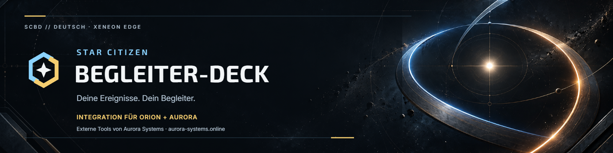
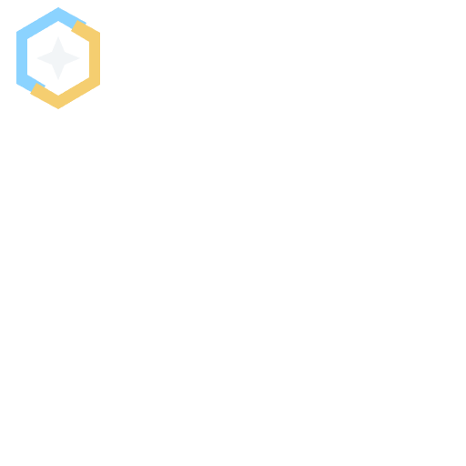
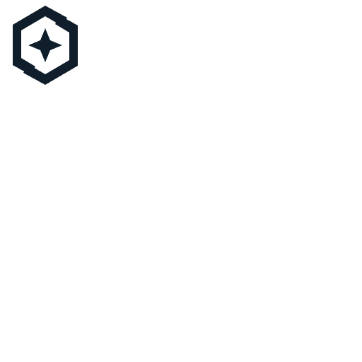
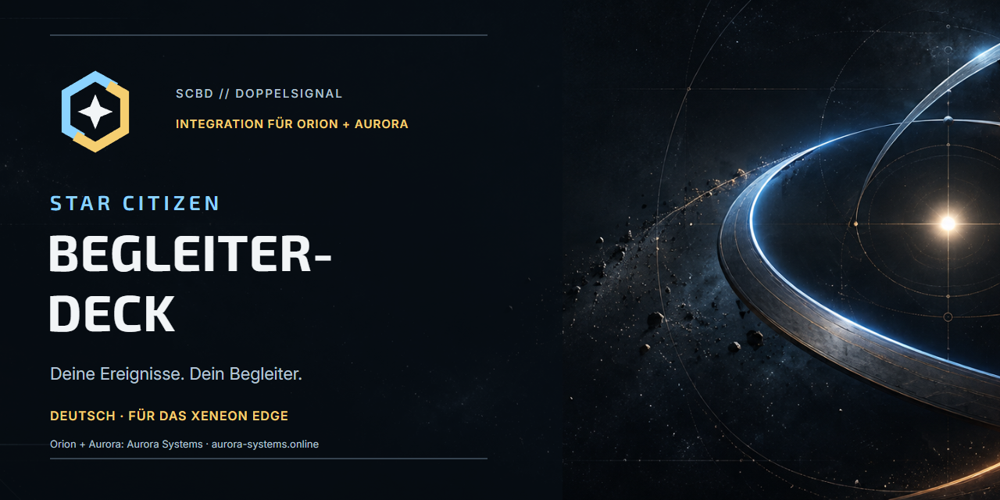
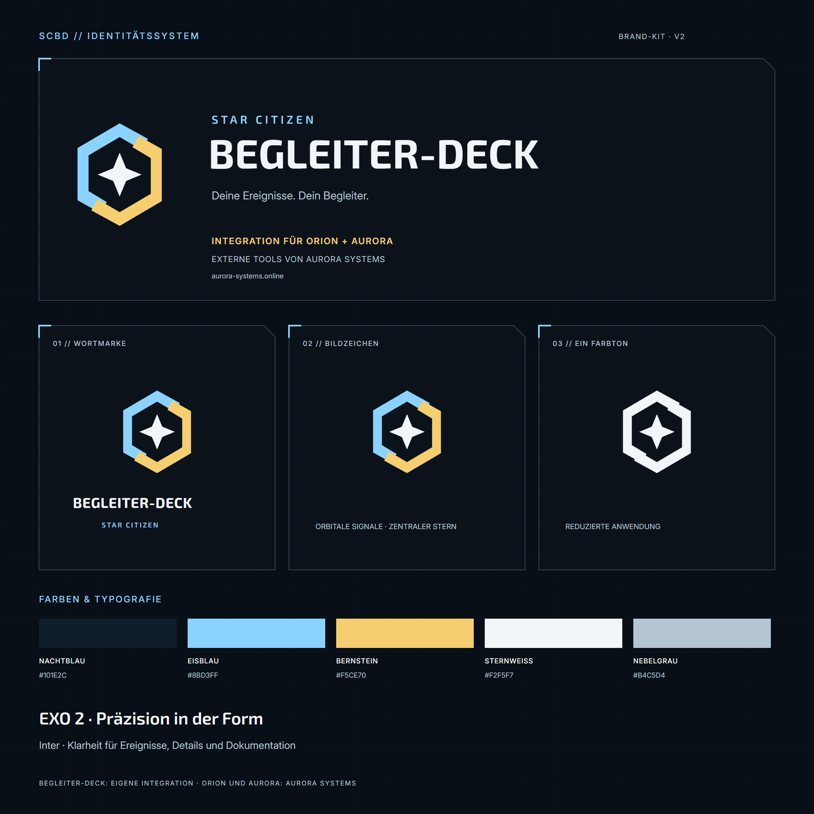

SCBD // VISUELLE IDENTITÄT
Star Citizen Begleiter-Deck
Eigenständiges Deck zur Integration von Orion und Aurora.
01 // REPOSITORY-BANNER

02 // WORTMARKE UND BILDZEICHEN


Primär · zwei Signale

Einfarbig · dunkle Flächen

Einfarbig · helle Flächen
03 // GITHUB-VORSCHAU

04 // LOGO-SYSTEMTAFEL
